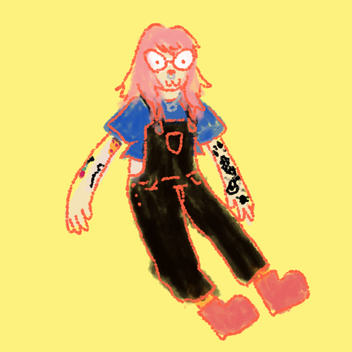

about
orin dee is a freelance illustrator, fiber artist, and tattoo artist currently based in philadelphia. he has a BFA in theatrical scenic painting with a minor in printmaking from otterbein university. he has exhibited his drawings and paintings throughout the united states and china. orin's work includes lots of textured linework and bright colors, displaying influences from outsider art, queer and leftist zines, and cartoons and comics of all kinds.